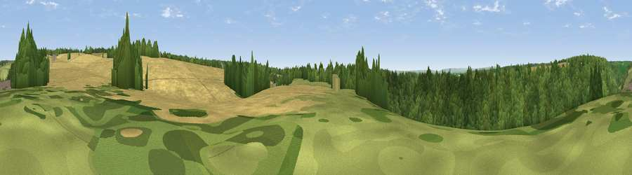

Viewpoint near Lockton
#29200 in England · top 61% of its area beats it · near LocktonWhere it is
The exact computed spot (SE 83325 86575). Click the marker for map links.
The view, rendered

A 360° render of this exact spot computed from the terrain model, tree cover and land cover — summer colours, afternoon light, calibrated against photographs of famous viewpoints. Real trees, hedges and buildings will differ in detail.
The panorama
Grey silhouette: terrain skyline in each direction (720 bearings, Earth curvature and refraction included). Dashed green: skyline with trees (+15 m) and buildings (+8 m) as obstacles. Blue strip: how far the ground is visible on each bearing.
Where the view opens
Wedge length = distance to the farthest visible ground on that bearing (vegetation-aware). Rings at 10, 25 and 50 km.
What fills the view
57% woodland · 34% cropland · 9% grassland
Angular shares of the visible panorama (visual magnitude), not map area. Landscape diversity 0.40 (0–1 Shannon).
Key numbers
More beautiful places nearby
The staircase of upgrades: each row has a higher view potential than everything closer. Driving times are estimates from straight-line distance, calibrated against real road routing — check an actual route before setting out.
| Place | Direction | Drive | Score |
|---|---|---|---|
| Viewpoint near Lockton | NNW · 1 km | ~3 min | 46.6 |
| Viewpoint near Thornton-le-Dale | SE · 2 km | ~6 min | 60.4 |
| Viewpoint near Allerston | SE · 3 km | ~8 min | 61.7 |
| Whinny Nab | NNE · 9 km | ~17 min | 64.9 |
| Langdale Rigg End | NE · 13 km | ~23 min | 65.1 |
| Ana Cross | NW · 13 km | ~24 min | 65.9 |
| Viewpoint near Scagglethorpe | S · 14 km | ~26 min | 70.2 |
| Viewpoint near West Heslerton | SE · 14 km | ~26 min | 70.5 |
54.26805, -0.72210 · source: screening · position refined by local search. Computed location — check access rights before visiting.